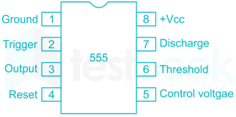
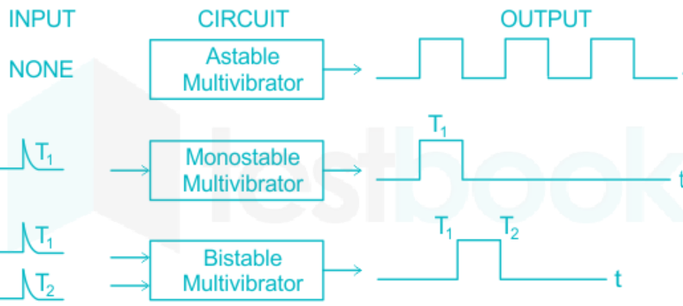
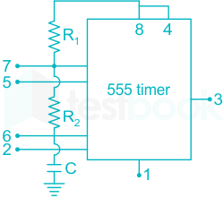

06 Power Amplifiers And 555 Timer And Voltage Regulators
Timer 555
1) Introduction to Timer 555
● The 555 Timer IC is a widely used integrated circuit in electronics for timing, pulse
generation, and oscillator applications .
● Operates in three modes : Astable, Monostable, and Bistable.
● Used in timers, waveform generation, LED flashing circuits, frequency modulation,
PWM control, etc.
Pin diagram

● Pin 1 (GND): Ground connection.
● Pin 2 (Trigger): Input for triggering the timer. A low voltage (less than 1/3 VCC) triggers
the timer.
● Pin 3 (Output): Provides the output signal.
● Pin 4 (Reset): Active low reset. Pulling this pin low resets the timer, regardless of its
state. Usually connected to VCC if not used.
● Pin 5 (Control Voltage): Allows external control of the threshold and trigger levels.
Often left unconnected or connected to a capacitor for noise reduction.
● Pin 6 (Threshold): Input for comparing the capacitor voltage with 2/3 VCC. When the
capacitor voltage exceeds this level, the output switches.
● Pin 7 (Discharge): Open collector transistor connected to the capacitor. Used to
discharge the capacitor.
● Pin 8 (VCC) : Positive power supply (typically +5V to +18V).
2) Operating Modes of 555 Timer
a) Monostable Mode (One-shot Timer)
Description: Generates a single output pulse in response to an external trigger. Application: Pulse generation, delay circuits.
● Formula for Time Period: 1.1 RC

Key Features:
One stable state (LOW).
● High output lasts for T seconds .
Output returns to LOW after a time delay.
b) Astable multivibrator
Description: Generates a continuous square wave without external triggers.
Application: LED blinking, waveform generators, clock pulses.

Where T C = (R 1 + R 2) C ln 2 T C = 0.693 (R 1 + R 2) C & T d = 0.692 R 2 C
Key Features:
No stable state, continuously oscillates.
● Used in clock pulses & tone generation .
c) Bistable Mode (Flip-Flop)
Description: Works as an SR flip-flop, switching between HIGH and LOW states when
triggered.
Application: Memory elements, logic circuits.
Operation :
Trigger pulse → Sets output HIGH. Reset pulse → Turns output LOW.
- 4) Applications:
● Pulse Generation: Creating precise timing pulses for digital circuits.
● Oscillators: Generating clock signals for microprocessors and other digital systems.
● Timers: Implementing time delays in circuits, such as in automatic light controllers.
● Pulse Width Modulation (PWM): Controlling the brightness of LEDs or the speed of
motors.
- 5) Advantages: Simple to use with minimal external components. Highly stable and reliable performance. Wide range of operating voltages. Cost-effective and widely available.
- 6) Disadvantages: Limited frequency range compared to specialized oscillators. Output voltage levels may not be suitable for all logic families without additional interfacing.